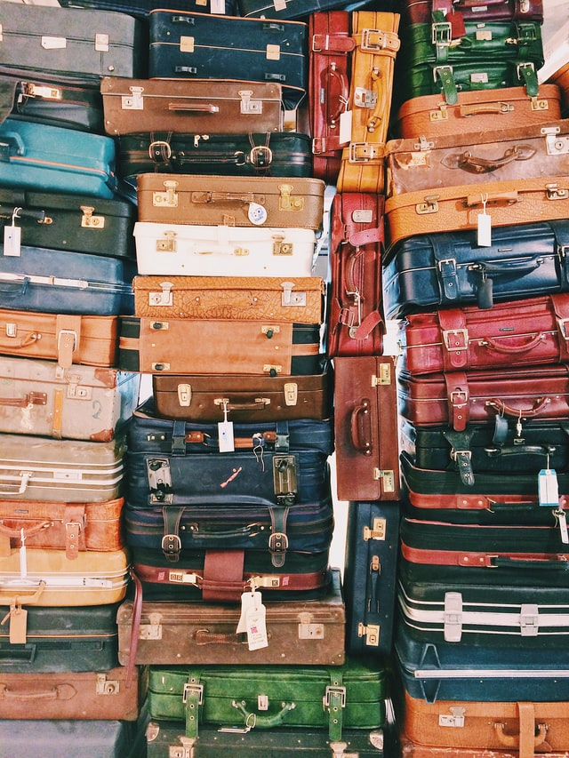

Travel
I’m an aspiring web designer who loves everything about the web. I've lived in lots of different places and have worked in lots of different jobs. I’m excited to bring my life experience to the process of building fantastic looking websites.
I’ve been a bartender and hairdresser and am a life-long learner who's always interested in expanding my skills.
Adventure Sports

I want to master the process of building web sites and increase my knowledge, skills and abilities in:
- HTML
- CSS
- JavaScript
- Ruby
- Rails
I’d like to work for a web design firm helping clients create an impressive online presence.
Reading

I’m an aspiring web designer who loves everything about the web. I've lived in lots of different places and have worked in lots of different jobs. I’m excited to bring my life experience to the process of building fantastic looking websites.
I’ve been a bartender and hairdresser and am a life-long learner who's always interested in expanding my skills.